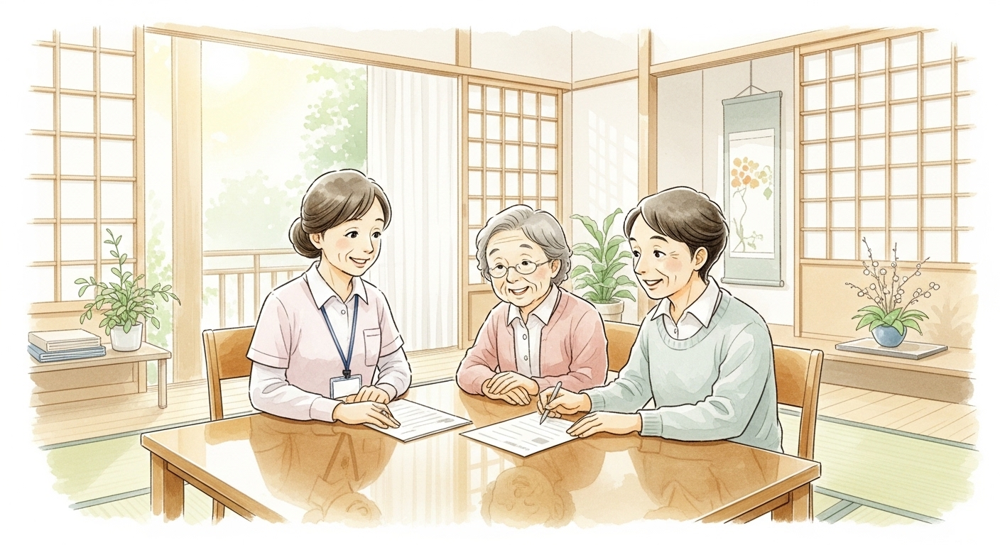
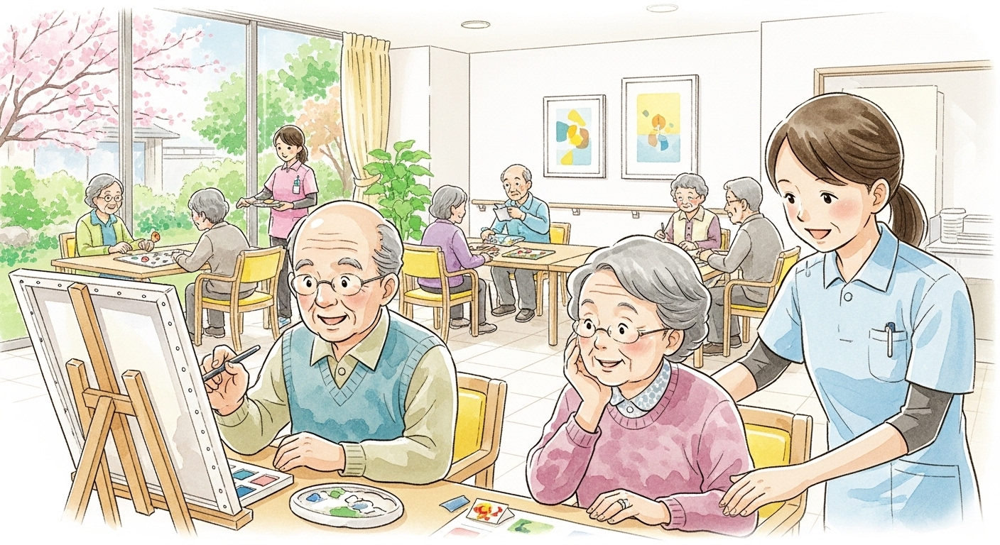
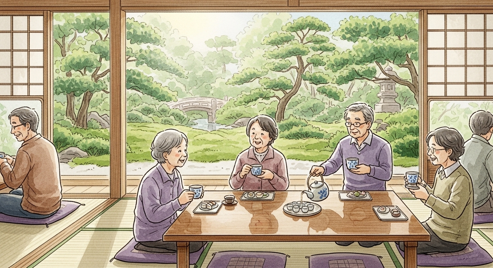
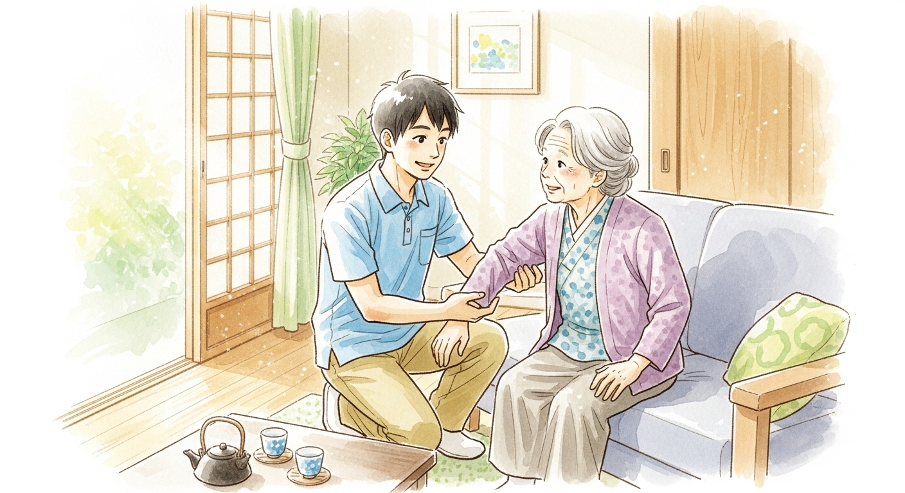

Service Guide
施設案内

Care Management
居宅介護支援（ケアマネージャー）
事業所 友遊
介護サービスが必要な方の窓口となり、相談にのり、さまざまなサービスの調整をします。 ケアマネージャーがご本人・ご家族の意向を踏まえたケアプランを作成し、 最適な介護サービスの組み合わせをご提案します。 まずはお気軽にご相談ください。
- 〒976-0042 福島県相馬市中村字北町1-8
- TEL/FAX：0244-32-0943
- 受付時間：平日 8:00〜17:30

Day Service
デイサービス 友遊
利用定員 15名緑ゆたかな環境でみんなとふれあい、会話や活動でイキイキと過ごせるデイサービスです。 機能訓練・レクリエーション・入浴・食事の提供など、日中を安心してお過ごしいただけるよう、 経験豊富なスタッフが丁寧にサポートいたします。
- 提供日：月曜〜金曜
- 〒976-0026 福島県相馬市南飯渕字木関無93
- TEL/FAX：0244-36-3582
- 受付時間：平日 8:00〜17:30

Day Service II
デイサービス 友遊Ⅱ
利用定員 18名馬陵城址の一角、自然に恵まれた環境の中でふれあい、会話や活動を楽しみながら いきがい心身健康ライフを送っていただけるデイサービスです。 スタッフ一同、笑顔でお迎えいたします。
- 提供日：月曜〜金曜
- 〒976-0042 福島県相馬市中村字北町1-8
- TEL：0244-26-5424 ／ FAX：0244-32-0965
- 受付時間：平日 8:00〜17:30

Home Care
訪問介護サービス 友遊
住み慣れた家で、元気に自分らしく暮らしていくためのお手伝いをします。 身体介護・生活援助など、ご利用者様の状況に合わせた支援を提供いたします。 「できないことをお手伝いする」だけでなく、「できることを一緒に続ける」ことを大切にしています。
- 〒976-0042 福島県相馬市中村字北町1-8
- TEL：0244-26-5424 ／ FAX：0244-32-0965
- 受付時間：平日 8:00〜17:30